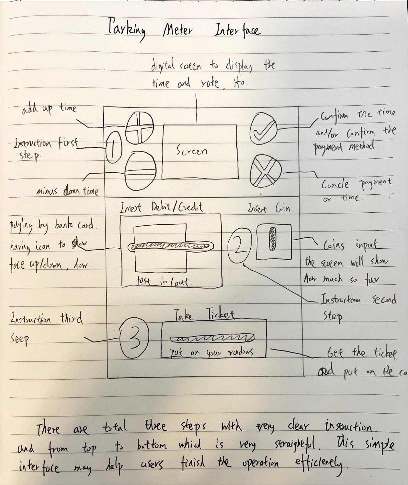
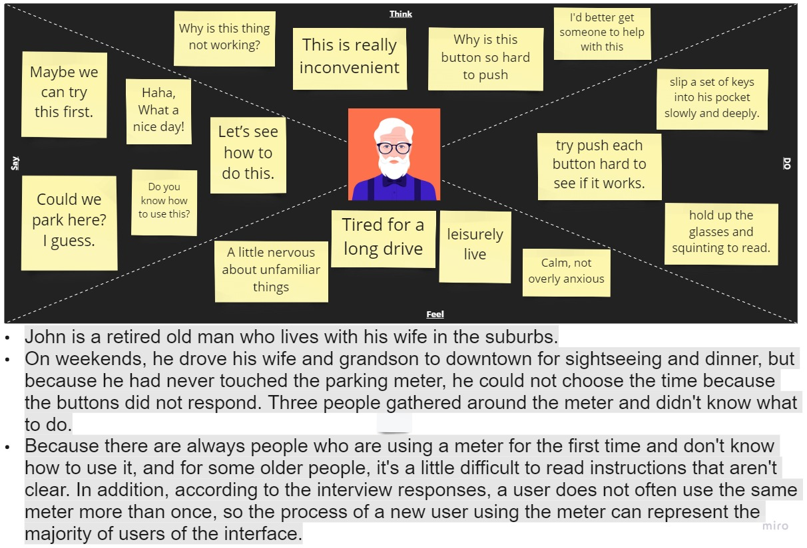
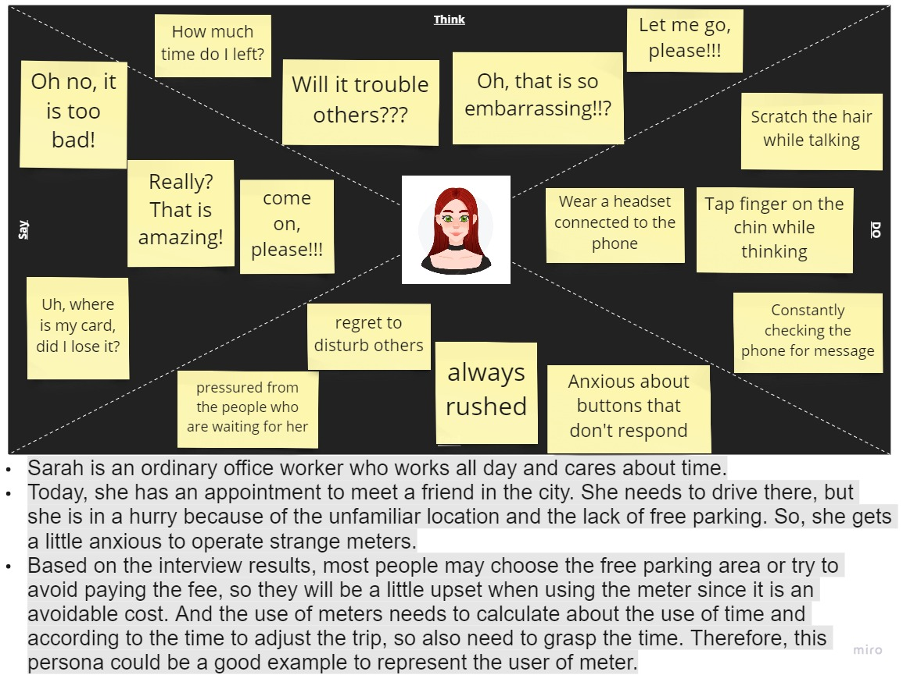
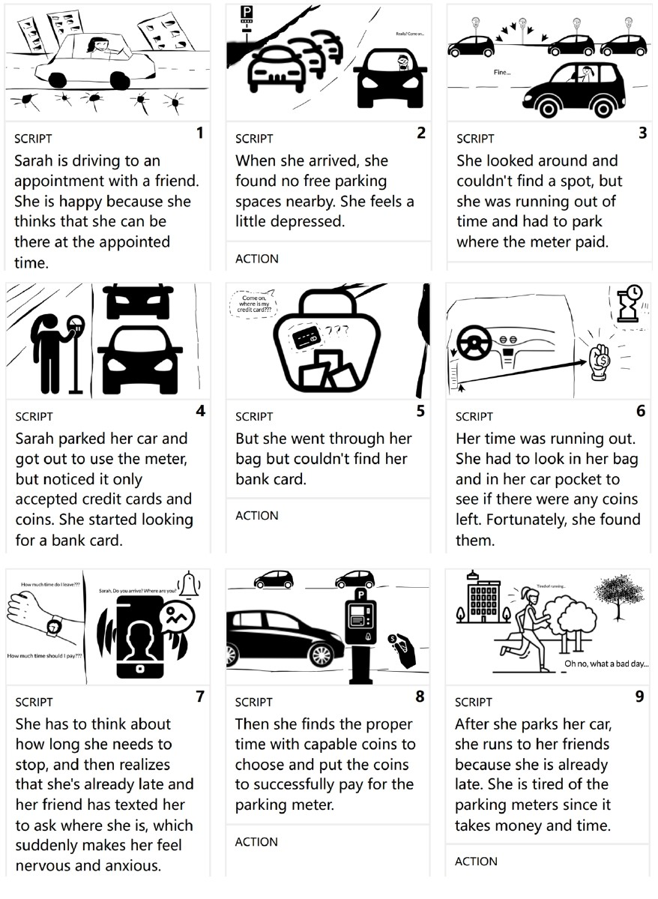

Introduction
The parking meter is something I often see on the side of the road but never use. Once I was walking along
and a tourist asked me how to use a meter, unfortunately, I haven't used one either.
Later I'm curious about how it worked and tried it by myself. I found the user interaction was not very
sensitive, and the operation is not sequential so that take me some time. Therefore I started my
exploration.
This project can help me understand the various user interaction interfaces around me, and think deeply about
the functions and meanings behind them. Then I can obtain more user experience through interviews, design
sketches, and imagination of user experience, so as to strengthen the connection between me and users and
lay an imaginary foundation for the later design.
Annotated sketch of interface
Here is my designed interface with the description, that is what I think should be a better interface.

Empathy maps
Based on the interview, Here is the empathy map designed for the interface. I designed for two guys with
different features. So that it may let me consider more situation.
John:

Sarah:

Storyboard
Based on Sarah, I created this storyboard to demonstrate the experience of user with parking meter
interface. And it can help me to imagine the user experience with clearer environment and scene.
